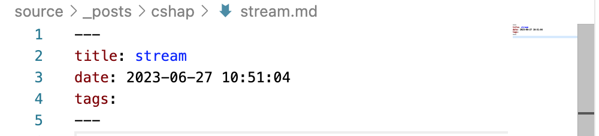
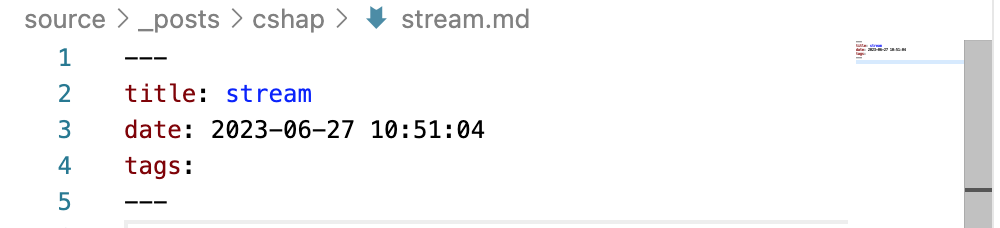

stream


1 | public override void OnActionExecuting(ActionExecutingContext context) |
直接报一个这个错System.InvalidOperationException: Synchronous operations are disallowed. Call ReadAsync or set AllowSynchronousIO to true instead.大致的意思就是同步操作不被允许，请使用ReadAsync的方式或设置AllowSynchronousIO为true。
如何设置AllowSynchronousIO的值。第一种方式是在ConfigureServices中配置，操作如下
1 | services.Configure<KestrelServerOptions>(options => |
还有一种方式，可以不用在ConfigureServices中设置，通过IHttpBodyControlFeature的方式设置，具体如下
1 | public override void OnActionExecuting(ActionExecutingContext context) |
这种方式同样有效，通过这种方式操作，不需要每次读取Body的时候都去设置，只要在准备读取Body之前设置一次即可。这两种方式都是去设置AllowSynchronousIO为true，但是我们需要思考一点，微软为何设置AllowSynchronousIO默认为false，说明微软并不希望我们去同步读取Body。通过查找资料得出了这么一个结论
Kestrel：默认情况下禁用 AllowSynchronousIO（同步IO），线程不足会导致应用崩溃，而同步I/O API（例如HttpRequest.Body.Read）是导致线程不足的常见原因。
通过上面我们了解到微软并不希望我们通过设置AllowSynchronousIO的方式去操作，因为会影响性能。那我们可以使用异步的方式去读取，这里所说的异步方式其实就是使用Stream自带的异步方法去读取，如下所示
1 | public override void OnActionExecuting(ActionExecutingContext context) |
ASP.NET Core中许多操作都是异步操作，甚至是过滤器或中间件都可以直接返回Task类型的方法，因此我们可以直接使用异步操作
1 | public override async Task OnActionExecutionAsync(ActionExecutingContext context, ActionExecutionDelegate next) |
这两种方式的操作优点是不需要额外设置别的，只是通过异步方法读取即可，也是我们比较推荐的做法。
上面我们演示了使用同步方式和异步方式读取RequestBody，但是这样真的就可以了吗？其实并不行，这种方式每次请求只能读取一次正确的Body结果，如果继续对RequestBody这个Stream进行读取，将读取不到任何内容，首先来举个例子
1 | public override async Task OnActionExecutionAsync(ActionExecutingContext context, ActionExecutionDelegate next) |
上面的例子中body里有正确的RequestBody的结果，但是body2中是空字符串。
那到底该如何解决呢？也很简单，微软知道自己刨下了坑，自然给我们提供了解决办法，用起来也很简单就是加EnableBuffering
1 | public override async Task OnActionExecutionAsync(ActionExecutingContext context, ActionExecutionDelegate next) |
通过添加Request.EnableBuffering()我们就可以重复的读取RequestBody了，看名字我们可以大概的猜出来，他是和缓存RequestBody有关，需要注意的是Request.EnableBuffering()要加在准备读取RequestBody之前才有效果，否则将无效，而且每次请求只需要添加一次即可。而且大家看到了我第二次读取Body的时候使用了同步的方式去读取的RequestBody，是不是很神奇，待会的时候我们会从源码的角度分析这个问题。
上面我们看到了通过StreamReader的ReadToEnd同步读取Request.Body需要设置AllowSynchronousIO为true才能操作，但是使用StreamReader的ReadToEndAsync方法却可以直接操作。
我们看到了都是通过操作StreamReader的方法即可，那关我Request.Body啥事，别急咱们先看一看这里的操作，首先来大致看下ReadToEnd的实现了解一下StreamReader到底和Stream有啥关联，找到ReadToEnd方法
1 | public override string ReadToEnd() |
通过这段源码我们了解到了这么个信息，一个是StreamReader的ReadToEnd其实本质是通过循环读取ReadBuffer然后通过StringBuilder去拼接读取的内容，核心是读取ReadBuffer方法，由于代码比较多，我们找到大致呈现一下核心操作
1 | if (_checkPreamble) |
通过上面的代码我们可以了解到StreamReader其实是工具类，只是封装了对Stream的原始操作，简化我们的代码ReadToEnd方法本质是读取Stream的Read方法。接下来我们看一下ReadToEndAsync方法的具体实现
1 | public override Task<string> ReadToEndAsync() |
通过这个我们可以看到核心操作是ReadBufferAsync方法，代码比较多我们同样看一下核心实现
1 | byte[] tmpByteBuffer = _byteBuffer; |
通过上面代码我可以了解到StreamReader的本质就是读取Stream的包装，核心方法还是来自Stream本身。我们之所以大致介绍了StreamReader类，就是为了给大家呈现出StreamReader和Stream的关系，否则怕大家误解这波操作是StreamReader的里的实现，而不是Request.Body的问题，其实并不是这样的所有的一切都是指向Stream的Request的Body就是Stream这个大家可以自己查看一下，了解到这一步我们就可以继续了。
上面我们说到了Request的Body本质就是Stream，Stream本身是抽象类，所以Request.Body是Stream的实现类。默认情况下Request.Body的是HttpRequestStream的实例，我们这里说了是默认，因为它是可以改变的，我们一会再说。我们从上面StreamReader的结论中得到ReadToEnd本质还是调用的Stream的Read方法，即这里的HttpRequestStream的Read方法，我们来看一下具体实现
1 | public override int Read(byte[] buffer, int offset, int count) |
通过这段代码我们就可以知道了为啥在不设置AllowSynchronousIO为true的情下读取Body会抛出异常了吧，这个是程序级别的控制，而且我们还了解到Read的本质还是在调用ReadAsync异步方法
1 | public override ValueTask<int> ReadAsync(Memory<byte> destination, CancellationToken cancellationToken = default) |
ReadAsync本身并无特殊限制，所以直接操作ReadAsync不会存在类似Read的异常。
通过这个我们得出了结论Request.Body即HttpRequestStream的同步读取Read会抛出异常，而异步读取ReadAsync并不会抛出异常只和HttpRequestStream的Read方法本身存在判断AllowSynchronousIO的值有关系。
我们在上面的示例中看到了，如果不添加EnableBuffering的话直接设置RequestBody的Position会报NotSupportedException这么一个错误，而且加了它之后我居然可以直接使用同步的方式去读取RequestBody，首先我们来看一下为啥会报错，我们从上面的错误了解到错误来自于HttpRequestStream这个类，上面我们也说了这个类继承了Stream抽象类,通过源码我们可以看到如下相关代码
1 | //不能使用Seek操作 |
相信通过这些我们可以清楚的看到针对HttpRequestStream的设置或者写相关的操作是不被允许的，这也是为啥我们上面直接通过Seek设置Position的时候为啥会报错，还有一些其他操作的限制，总之默认是不希望我们对HttpRequestStream做过多的操作，特别是设置或者写相关的操作。但是我们使用EnableBuffering的时候却没有这些问题，究竟是为什么?接下来我们要揭开它的什么面纱了。首先我们从Request.EnableBuffering()这个方法入手
1 |
|
从上面这段源码实现中我们可以大致得到两个结论
通过上面的分析我们也清楚的看到了，核心操作在于FileBufferingReadStream这个类，而且从名字也能看出来它肯定是也继承了Stream抽象类
本篇文章篇幅比较多，如果你想深入的研究相关逻辑，希望本文能给你带来一些阅读源码的指导。为了防止大家深入文章当中而忘记了具体的流程逻辑，在这里我们就大致的总结一下关于正确读取RequestBody的全部结论
摘抄 yi念之间 原文地址
ASP.NET Core 支持使用缓冲模型绑定（针对较小文件）和无缓冲流式传输（针对较大文件）上传一个或多个文件。
小型和大型文件的定义取决于可用的计算资源。 应用应对存储方法进行基准测试，以确保它可以处理预期的大小。 基准内存、CPU、磁盘和数据库性能。
虽然无法针对部署的“小”与“大”提供特定边界，但以下是 AspNetCore 针对 FormOptions 的一些相关默认值：
缓冲和流式传输是上传文件的两种常见方法。
缓冲
将整个文件读入 IFormFile。 IFormFile 是用于处理或保存文件的文件的 C# 表示形式。
文件上传使用的磁盘和内存取决于并发文件上传的数量和大小。 如果应用尝试缓冲过多上传，站点就会在内存或磁盘空间不足时崩溃。 如果文件上传的大小或频率会消耗应用资源，请使用流式传输。
会将大于 64 KB 的所有单个缓冲文件从内存移到磁盘的临时文件。
较大请求的临时文件将写入环境变量中 ASPNETCORE_TEMP 名为 的位置。 如果未 ASPNETCORE_TEMP 定义 ，则文件将写入当前用户的临时文件夹。
流式处理
从多部分请求收到文件，然后应用直接处理或保存它。 流式传输无法显著提高性能。 流式传输可降低上传文件时对内存或磁盘空间的需求。
要上传小文件，请使用多部分窗体或使用 JavaScript 构造 POST 请求。
1 | <script> |
如下示例中：
1 | public async Task<IActionResult> OnPostUploadAsync(List<IFormFile> files) |
使用 Path.GetRandomFileName 生成文件名（不含路径）。 在下面的示例中，从配置获取路径：
1 | foreach (var formFile in files) |
传递给 FileStream 的路径必须包含文件名。 如果未提供文件名，则会在运行时引发 UnauthorizedAccessException。
使用 IFormFile 技术上传的文件在处理之前会缓冲在内存中或服务器的磁盘中。 在操作方法中，IFormFile 内容可作为 Stream 访问。 除本地文件系统之外，还可以将文件保存到网络共享或文件存储服务，如 Azure Blob 存储。
如果在未删除先前临时文件的情况下创建了 65,535 个以上的文件，则 Path.GetTempFileName 将抛出一个 IOException。 65,535 个文件限制是每个服务器的限制。 有关 Windows 操作系统上的此限制的详细信息，请参阅以下主题中的说明：
- GetTempFileNameA 函数
- GetTempFileName
要使用实体框架将二进制文件数据存储在数据库中，请在实体上定义 Byte 数组属性：
1 | public class AppFile |
将窗体发布到服务器后，将 IFormFile 复制到流，并将它作为字节数组保存在数据库中。 在下面的示例中，_dbContext 存储应用的数据库上下文：
1 | public async Task<IActionResult> OnPostUploadAsync() |
1 | public async Task<IActionResult> UploadDatabase() |
有很多方法可以在Angular中创建Observable对象。您可以使用Observable构造函数，如Observable教程中所示。还有许多函数可以用来创建新的Observable。这些函数帮助我们从数组、字符串、promise等创建Observable。
调用Create方法是创建Observable最简单的方式。Create是Observable对象的内容方法，所以您不必导入它。
1 | ngOnInit() { |
我们在上一个示例中可以看到这一点，Observable.create方法和Observable构造函数之间没有区别。Observable的Create方法实际在幕后调用Observable的构造函数。
1 | ngOnInit() { |
1 | ngOnInit() { |
From 操作符受一个可以迭代的参数，并将其转换为Observable的参数。
1 | ngOnInit() { |
| Of | From |
|---|---|
| 接受变量(并不是参数) | 只接受一个参数 |
| 在不更改任何内容的情况下按原样发出每个变量 | 迭代参数并发出每个值 |
1 | fromEvent<T>(target: FromEventTarget<T>, |
FromEventTarget：是fromvevent的第一个参数。它可以是DOM EventTarget、Node.js EventEmitter、类似JQuery的事件目标、NodeList或HTMLCollection。目标必须有一个方法来注册/注销事件处理程序。（如果是DOM事件目标，则为addEventListener/removeEventListener）
eventName：是第二个参数，这是我们想要侦听的事件类型。
eventListenerOptions：是我们在注册事件处理程序（即addEventListener）时要传递给的附加参数
resultSelector：是可选的，在未来的版本中将不推荐使用
1 |
|
我们可以从ngAfterViewInit方法调用上述方法。请注意，@ViewChild在ngOnInit之前不会初始化btn元素。因此，我们在这里使用ngAfterViewInit。
Angular Observable的管道方法用于将多个操作符链接在一起。我们可以将管道作为一个独立的方法使用，这有助于我们在多个地方重用它或将其作为一个实例方法。在本教程中，我们将了解管道，并了解如何在Angular应用程序中使用它。我们将向您展示使用map、filter和tap操作符的管道示例。
管道方法接受filter、map等运算符作为参数。每个参数必须用逗号分隔。运算符的顺序很重要，因为当用户订阅可观察对象时，管道会按添加运算符的顺序执行运算符。
我们有两种方法可以使用这个管道。一种是作为observable的实例，另一种是作为独立方法使用
管道作为实例方法如下所示。我们将运算符op1、op2等作为参数传递给管道方法。op1方法的输出变成op2运算符的输入，依此类推。
1 | obs.pipe( |
以下是将管道与map & filter操作符一起使用的示例。
1 | import { Component, OnInit } from '@angular/core'; |
我们也可以将管道作为一个独立的函数来组成操作符，并在其他地方重用管道。
1 | customOperator = pipe( |
1 | customOperator = pipe( |
我们可以使用Create方法或Observable构造函数来创建一个新的Observable。
当您有类似数组的值时，Of运算符很有用，您可以将其作为单独的参数传递给Of方法以创建可观察的值。
From操作符试图迭代传递给它的任何东西，并从中创建一个可观察的对象。
RxJS库中有许多其他运算符或方法可用于创建和操作Angular observable。我们将在接下来的几个教程中学习其中的一些内容
流是在一段时间内到达的数据。数据流可以是任何东西，比如变量、用户输入、属性、缓存、数据结构，甚至异常等。
考虑一下鼠标单击事件的x和y位置序列的例子。假设用户已经按顺序点击了位置（12,15）、（10,12）、（15,20）和（17,15）。下图显示了值是如何在一段时间内到达的。正如您所看到的，流在值发生时即异步地发出。
值并不是流发出的唯一东西，流可以在用户关闭窗口或应用程序时完成，或者程序发生错误时，导致流关闭。任何时间，流都可能发出以下三种东西中的任何一种。
正如前面所说，数据流可以是任何东西。例如
现在，我们已经了解了什么是数据流，让我们看看什么是响应式编程
响应式编程就是创建数据流，触发值，错误或完成信号。修改、转换或对数据流做一些有用的操作。
RxJS（Reactive Extensions Library for JavaScript）是一个JavaScript库，它允许我们使用异步数据流
Angular在其框架中大量使用RxJS库来实现响应式编程。使用响应式编程的一些示例如下：
RxJs有两个主要对象
Observable是一个将普通数据流转换为可观测数据流的函数。您可以将Observable看作是普通数据流的包装器。
Observable流或简单Observable使用异步流发送值内容，当流发送完成时，它会发出完成信号，当流出错时，他会发出错误信号。
Observable是声明性的，定义了一个Observable函数，就像定义其他变量一样。只有当有人订阅了observable时，它才会开始发出值。
“Observable”本身是无用的，除非有人消耗了Observable发出的值。我们称他们为观察者或订阅者。观察者使用回调与Observable通信。
观察者必须订阅可观察的事物，才能从可观察的东西中获得值。在订阅时，它可以选择性地传递这三个回调。next（）、error（）和complete（）
一旦观察者或消费者订阅了该值，可观察对象就开始发出该值。
每当值到达流中时，observable就会调用next()回调。它将该值作为参数传递给next()回调。如果发生错误，则调用error()回调。当流完成时，它调用complete()回调。
有几种方法可以在angular中创建可观察的对象。最简单的是使用Observable构造函数。observable构造函数以subscriber作为其参数。subscriber将在这个observable的subscribe()方法执行时运行。
以下示例创建了一个数字流1、2、3、4、5的observable
1 | obs = new Observable((observer) => { |
变量obs现在属于observable类型。
上面的例子声明obs为observable，但没有实例化它。要使observable发出值，我们需要订阅它。
在上面的例子中，我们使用了Observable构造函数来创建Observable。RxJS库有许多可用的运算符，这使得创建可观察对象变得容易。这些运算符帮助我们从数组、字符串、promise、任何可迭代的内容等,创建可观察的内容。
我们通过调用observable上的subscribe方法来订阅它。我们可以选择性地包括三个回调next()、error()和complete()，如下所示
1 | ngOnInit() { |
1 | obs = new Observable((observer) => { |
如前所述，Observable也会发出误差。这是通过调用error（）回调并传递error对象来完成的。Observable在发出错误信号后停止。因此，永远不会发射值4和5。
1 | obs = new Observable((observer) => { |
在发出完成信号后，Observable就会停止，因此，永远不会发射值4和5。
1 | obs = new Observable((observer) => { |
操作符是对Observable进行操作并返回新Observable的函数。
Observable的能力来自于操作符，您可以使用操作符来操作传入的Observable对象，对其进行过滤，将其与另一个Observable对象合并，更改值或订阅另一个Observable对象。
也可以使用管道将操作符链接起来。链中的每个操作符都可以从上一个操作符中获得Observable。它对其进行修改并创建一个新的Observable，该Observable成为下一个Observable的输入。
以下示例显示了filer和map运算符使用管道链接到一起，filter运算符删除所有小于等于2的数据，map运算符将该值乘以2。
输入流为[1，2，3，4，5]，而输出流为[6，8，10]。
1 | obs.pipe( |
当我们不再需要observable时，我们需要取消订阅以关闭它。如果不取消订阅，可能会导致内存泄漏和性能下降。
要从可观察到的订阅中取消订阅，我们需要对订阅调用Unsubscribe（）方法。它将清理所有侦听器并释放内存。要做到这一点，首先，创建一个变量来存储订阅。
1 | obs: Subscription; |
将订阅分配给obs变量
1 | this.obs = this.src.subscribe(value => { |
在ngOnDestroy方法中调用unsubscribe()方法。
1 | ngOnDestroy() { |
当我们销毁组件时，可观察到的内容将被取消订阅并清除。但是，您不必每次订阅都取消订阅。例如，发出完整信号的可观测对象，自动关闭。
响应式编程就是对流进行编程。RxJS库将响应式编程引入了Angular。使用RxJs，我们可以创建一个可观测对象，它可以向观测对象的订阅者发出值、错误和完成信号。
我们使用装饰器为Angular中的类声明、方法、访问器、属性和参数提供元数据。我们使用它来装饰组件、指令、模块等。在本文中，让我们了解什么是装饰器，为什么需要它，以及如何创建自定义装饰器。我们还要了解Angular支持的内置装饰器。
Angular 装饰器是一个函数，我们使用它将元数据附加到类、方法、访问器、属性或参数。
我们以@expression形式使用装饰器，其中expression是装饰器的名称。
例如，@Component是一个装饰器，我们将其附加到一个Angular组件。当Angular看到@Component装饰器应用于一个类时，它将该类视为一个组件类。在下面的示例中，正是@Component装饰器使AppComponent成为一个Angular组件。如果没有装饰器，AppComponent就像其他类一样。
1 | @Component({ |
decorator装饰器是一个Typescript特性，它仍然不是Javascript的一部分。它仍处于提案阶段。
要启用Angular 装饰器，我们需要将experialDecorators添加到tsconfig.json文件中。ng-new命令会自动为我们添加此内容。
1 |
|
在下面的例子中，我们创建了一个函数simpleDecorator。我们将使用它来装饰AppComponent类。该函数不接受任何参数。
1 | import { Component, VERSION } from '@angular/core'; |
正如我们前面所说，d装饰器 是一个常规的JavaScript函数。由于我们在类上使用它，因此它获取AppComponent的实例作为参数（目标）
1 |
|
在函数内部，我们将两个自定义属性value1和value2添加到AppComponent。请注意，我们使用defineProperty属性向组件类添加一个新属性。此外，我们将其添加到类的原型属性中。
1 | Object.defineProperty(target.prototype, 'value1', { |
现在，我们可以使用它来装饰我们的AppComponent
1 | @simpleDecorator |
在组件内部，我们可以使用关键字“this”访问新的属性。
1 | ngOnInit() { |
要创建一个带参数的装饰器，我们需要创建一个工厂函数，该函数返回装饰器函数。
1 | import { Component, VERSION } from '@angular/core'; |
simpleDecorator将args作为参数，并返回 装饰器函数。除了使用参数填充财产之外，其余代码与上面的代码相同。
1 | function simpleDecorator(args) { |
我们在组件上应用simpleDecorator，如下所示
Angular提供了几个内置的装饰器。我们可以把它们分为四类
以下是Angular中装饰器的完整列表。
Renderer2允许我们在不直接访问DOM的情况下操作DOM元素。它在DOM元素和组件代码之间提供了一层抽象。使用Renderer2，我们可以创建一个元素，向其中添加一个文本节点，使用appendchild方法附加子元素。我们还可以添加或删除样式、HTML属性、CSS类和属性等。我们还可以附加和侦听DOM事件。
ElelemtRef的nativeElement属性包含对底层DOM对象的引用，这使我们可以绕过Angular直接访问DOM，我们可以使用nativeElement属性来直接操作DOM元素。但由于以下原因，直接操作DOM是不建议的。
首先从 @angular/core 导入 Renderer2.
1 | import {Component, Renderer2, ElementRef, ViewChild, AfterViewInit } from '@angular/core'; |
在组件中注入 Renderer2
1 | constructor(private renderer:Renderer2) { |
使用 ElementRef & ViewChild 获取我们想操作的DOM元素实例
1 | @ViewChild('hello', { static: false }) divHello: ElementRef; |
使用setProperty、setStyle等方法更改元素的属性和样式，如下所示
1 | this.renderer.setProperty(this.divHello.nativeElement,'innerHTML',"Hello Angular") |
使用setStyle和RemoveStyle添加或删除样式，它接受四个参数。第一个参数是我们要应用样式的元素，第二个参数是样式的名称，第三个参数是样式的值，最后一个参数是可选的，他是样式变量的标志
1 | abstract setStyle(el: any, style: string, value: any, flags?: RendererStyleFlags2): void |
例如：
1 | //Template |
使用最后一个选项RendererStyleFlags2指定渲染器特有样式修饰符
使用 addClass / removeClass 添加&删除CSS样式。
1 | abstract addClass(el: any, name: string): void |
例如：
1 | //Template |
使用 setAttribute & removeAttribute 添加&移除 attribute样式。
元素没有此 attribute，也可以添加上去
attribute，还可以做动词，表示赋予，属于人为赋予的可改变的属性
1 | setAttribute(el: any, name: string, value: string, namespace?: string): void |
使用setProperty方法设置DOM元素的任何属性。
元素没有此 property 不会添加上去
property是 物体本身自带属性，不能改变的（一旦改了就是另外一个东西了）
1 | setProperty(el: any, name: string, value: any): void |
使用appendChild将一个新元素（子元素）附加到任何现有元素（父元素）。
1 | appendChild(parent: any, newChild: any): void |
它接受两个参数。第一个参数是父节点(我们希望在其中附加一个新的子节点)。第二个参数是要添加的子节点。
1 | const div = this.renderer.createElement('div'); |
我们还可以使用insertBefore方法在DOM元素中的元素之前插入新元素。insertBefore的语法如下所示
1 | insertBefore(parent: any, newChild: any, refChild: any): void |
parent是父节点,newChild是要插入的新节点,refChild是插入newChild之前的现有子节点。
createComment创建注释节点。它接受注释作为自变量。然后可以使用appendChild或insertBefore将其插入DOM中的任何位置。
1 | createComment(value: string): any |
ParentNode方法返回宿主元素DOM中给定节点的父节点。
1 | /Returns the parent Node of div3 |
nextSibling方法返回宿主元素DOM中给定节点的下一个同级节点。
1 | //Returns the next Sibling node of div2 |
我们也可以使用selectRoomElement来选择基于选择器的节点元素。
1 | selectRootElement(selectorOrNode: any, preserveContent?: boolean) |
第一个参数是选择器或节点。Renderer2使用选择器来搜索DOM元素并返回它。
第二个参数是preserveContent，如果是no或undefined，renderer2将删除所有子节点。如果是yes，则不会删除子节点。
您也可以使用listen方法来侦听DOM事件。
listen方法接受三个参数，第一个参数是DOM元素（目标），第二个参数是事件的名称（eventName），第三个参数是回调函数
1 | abstract listen(target: any, eventName: string, callback: (event: any) => boolean | void): () => void |
Angular ElementRef是一个围绕原生DOM元素（HTML元素）对象的包装器。它包含属性nativeElement，该属性保存对底层DOM对象的引用。我们可以使用它来操作DOM。我们组件中使用ViewChild来获取模板HTML元素的ElementRef实例。Angular还在组件或指令的构造函数中注入宿主元素的ElementRef实例。在本教程中，让我们探讨如何使用ElementRef来获得HtmlElement的引用并在Angular Applications中操作DOM。
DOM对象由浏览器创建和维护。它们代表了文件的结构和内容。在原生JavaScript代码中，我们访问这些DOM对象来操作View。我们可以创建文档，以及添加、修改或删除元素和内容。
Angular提供了许多工具和技术来操作DOM。我们可以添加/删除组件。它提供了许多指令，如类指令或样式指令，来操纵他们的风格等。
在某些情况下，我们可能仍然需要访问DOM元素。这就需要用到ElementRef。
要使用ElementRef操作DOM，我们需要在组件/指令中获取它对DOM元素的引用。
例如，在下面的代码中，变量hello引用了HTML元素div。
1 | <div #hello>Hello Angular</div> |
我们可以在模板中使用hello这个模板引用变量。
在Component类中，我们使用ViewChild来注入hello元素。Angular将hello作为ElementRef类型注入。
1 | @ViewChild('hello', { static: false }) divHello: ElementRef; |
考虑以下示例
1 | <input #nameInput [(ngModel)]="name"> |
nameInput 模板引用变量现在绑定到input输入元素。但与此同时，我们也将ngModel指令绑定到它上面。
在这种情况下，我们可以使用read令牌让angular知道我们需要ElementRef引用到谁，如下所示
1 | //ViewChild returns ElementRef i.e. input HTML Element |
一旦我们有了ElementRef，我们就可以使用nativeElement属性来操作DOM，如下所示。
在访问ViewChild变量之前，我们需要等待Angular初始化视图。因此，我们要等到AfterViewInit生命周期挂钩之后，才能开始使用该变量。
1 | import { Component,ElementRef, ViewChild, AfterViewInit } from '@angular/core'; |
我们可以非常容易得操作DOM元素
1 | ngAfterViewInit() { |
ElementRef的一个用例是Angular指令。我们学习了如何在Angular中创建自定义指令。以下是ttClass自定义属性指令的代码。
1 | import { Directive, ElementRef, Input, OnInit } from '@angular/core' |
请注意，我们在构造函数中注入ElementRef。每当我们访问构造函数中注入的ElementRef时，Angular就会注入对指令的宿主DOM元素的引用。
谨慎使用
当需要直接访问DOM时，使用此API作为最后的手段。请改用Angular提供的模板和数据绑定。或者，您可以看看Renderer2，它提供了即使不支持直接访问本机元素也可以安全使用的API。
依赖于直接DOM访问会在应用程序和渲染层之间产生紧密耦合，这将使您无法将两者分离并将应用程序部署到web工作者中。
ElementRef的不当使用可能导致XSS注入攻击。例如，在下面的代码中，我们正在使用elementRef注入一个脚本。当包含此类代码的组件运行时，将执行脚本
1 | constructor(private elementRef: ElementRef) { |
ViewChild或ViewChildren装饰器用于查询和获取组件中DOM元素的引用。ViewChild返回第一个匹配的元素，ViewChildren以QueryList形式返回所有匹配的元素。我们可以通过这些引用在组件中操作dom元素属性。
ViewChild或ViewChildren的第一个参数是查询选择器，通过ViewChild或ViewChildren来查询DOM元素，我们可以提供字符串或类型作为查询选择器。参数static确定是在更改检测之前还是之后执行查询。read选项允许我们查询不同的令牌，而不是默认令牌，并且在元素与多个类型关联时很有用。
ViewChild查询从DOM返回第一个匹配元素，并更新它在组件中绑定的变量。
1 | ViewChild(selector: string | Function | Type<any>, opts: { read?: any; static: boolean; }): any |
我们在组件属性上应用viewChild装饰器。它需要提供两个参数，selector和opts。
selector：可以是字符串、类型或返回字符串或类型的函数。变更检测查找与选择器匹配的第一个元素，并使用对该元素的引用更新组件属性。如果DOM发生更改，并且有一个新元素与选择器匹配，则变更检测会更新组件属性。
opts：有两个选项。
ViewChild的一个用例是在父组件中获取子组件的引用并操作其属性。
1 | import { Component } from '@angular/core'; |
我们可以在父组件中使用 ViewChild 引用子组件。
1 | @ViewChild(ChildComponent, {static:true}) child: ChildComponent; |
在上面的代码中，ViewChild在父组件视图(Template)中查找第一个出现的ChildComponent组件，并更新父组件中的child变量。现在我们可以从父组件调用ChildComponent组件中的Increment和Decrement方法。
1 | import { Component, ViewChild } from '@angular/core'; |
您可以使用模板引用变量代替组件类型。
1 | <child-component #child></child-component> |
然后在ViewChild查询中使用它来获取对该组件的引用。
1 | @ViewChild("child", { static: true }) child: ChildComponent; |
Viewchild 同样可以用来查询 HTML元素。
首先可以给HTML元素指定模板变量，然后就可以在viewChild中使用此模板变量查询HTML元素。查询结果将返回一个ElementRef类型的元素，它是本地HTML元素的包装器。
1 | import {AfterViewInit, Component, ElementRef, ViewChild} from '@angular/core'; |
模板中可能存在同一组件或元素的多个实例。
1 | <child-component></child-component> |
ViewChild 总是返回第一个匹配的组件。
1 | @ViewChild(ChildComponent, {static:true}) child: ChildComponent; |
要获取子组件的所有实例，我们可以使用ViewChildren，我们将在本教程后面介绍它。
ViewChild返回Undefined是我们在使用它们时遇到的常见错误之一。
该错误是由于我们试图在ViewChild初始化之前使用该值。
例如，下面的代码导致无法读取未定义的属性“increment”。当构造函数运行前，组件的视图尚未初始化。因此，Angular无法通过引用ChildComposet变量来更新child变量。
1 | export class AppComponent { |
解决方案是等待Angular初始化视图。Angular在完成视图初始化后会引发AfterViewInit生命周期挂钩。因此，我们可以使用ngAfterViewInit来访问子变量。
1 | ngAfterViewInit() { |
现在，代码没有给出任何错误。
上面的代码也将与ngOnInit生命周期挂钩一起使用。但它不能保证一直工作，因为Angular可能不会在引发ngOnInit钩子之前初始化视图的所有部分。因此，最好使用ngAfterViewInit钩子。
此外，ViewChild更新值的时间也取决于静态选项
我们在上面的代码中使用了{static:true}。
static选项确定ViewChild查询解析的时间。
static:true 将在每次变更改检测之前解析ViewChild。
static:false 将在每次变更改检测之后解析ViewChild。
当动态渲染子对象时，static的值变得很重要。例如在ngIf或ngSwitch等内部。
例如，考虑下面的代码，我们子组件放在ngIf中
1 | //child.component.html |
1 | //child.component.ts |
上述代码导致TypeError:无法读取未定义的属性“increment”。即使我们将true赋值给showCounter，也会发生错误。
因为在上述情况下，Angular不会立即渲染子组件。但在第一次变更检测之后，angular会检测showCounter的值并渲染子组件。
由于我们使用了static:true，angular将在运行第一次更改检测之前尝试解析ViewChild。因此，child变量总是未定义的。
现在，更改static：false。现在，代码将正常工作。也就是说，因为在每次检测到更改之后，Angular都会更新ViewChild。
单个元素可以与多种类型相关联。
例如，考虑以下代码#nameInput模板变量现在与input和ngModel都关联
1 | <input #nameInput [(ngModel)]="name"> |
下面的viewChild代码将input元素的实例作为elementRef返回。
1 | @ViewChild('nameInput',{static:false}) nameVar; |
如果我们想获得ngModel的实例，那么我们使用Read选项指定需要的令牌类型。
1 | @ViewChild('nameInput',{static:false, read: NgModel}) inRef; |
Angular中的每个元素总是有一个ElementRef和ViewContainerRef与之关联。如果该元素是一个组件或指令，那么总是有组件或指令实例。您也可以对一个元素应用多个指令。
不带read令牌的ViewChild默认返回值类型为组件，如果返回值不是组件类型则返回elementRef类型。
您还可以注入子组件中提供的服务。
1 | import { ViewChild, Component } from '@angular/core'; |
在父组件中，可以使用read属性访问提供程序
1 | import { ViewChild, Component } from '@angular/core'; |
HostBinding和HostListener是Angular中的装饰器。HostListener侦听宿主控件事件，而HostBinding允许我们绑定宿主控件的属性。宿主控件是我们将要附加组件或指令到它上面的目标控件。此功能允许我们在用户对宿主控件执行某些操作或修改样式时采取一些措施；
宿主控件是我们附加指令或组件的元素。请记住，组件是带有视图（模板）的指令。
例如：
请考虑以下ttToggle指令。我们将其附加到按钮组件。这里的按钮组件是宿主组件。
1 | <button ttToggle>Click To Toggle</button> |
在下面的例子中apphighlight是指令，p控件是宿主控件
1 | <div> |
Host Binding将宿主控件属性绑定到指令或组件中的变量
例如：
以下appHighLight指令 通过 HostBinding 将父元素的style.border属性绑定到指令中的border属性。
因此我们更改指令中 border的值，angular将会更新父元素border样式。
1 | import { Directive, HostBinding, OnInit } from '@angular/core' |
1 | <div> |
HostListener 装饰器用来监听宿主元素上的DOM事件。它还提供了一个在事件发生时调用的处理程序。
例如，在以下代码中，HostListener侦听mouseover和mouseleave事件。我们使用HostListner在宿主元素的MouseOver和MouseLeave事件上绑定相应事件处理函数。
1 | import { Directive, HostBinding, OnInit, HostListener } from '@angular/core' |
我们在宿主元素p上面使用appHighLight指令，每当鼠标移动到p元素上时，鼠标悬停事件都会被HostListener捕获，它运将行我们附加到它的onMouseOver方法。该方法使用HostBinding为p元素添加一个绿色边界。
类似地，在mouseleave事件中，边框被移除。
1 | <div> |
将样式附加到宿主元素是HostBinding装饰器的常见用法之一。
例如，以下示例将highlight&box样式添加到宿主元素中
1 | @HostBinding('class') class: string; |
同样可以使用 getter 方法
1 | @HostBinding('class') get class() { return "highlight box" } |
其他例子
1 | @HostBinding('class.highlight') get hasHighlight () { return true; } |
HostBinding添加的样式必须存在于宿主元素的作用域中。即highlight&box必须存在于全局样式或我们添加指令的组件中。
这些组件不过是带有模板的指令。因此，我们也可以在组件中同时使用HostBinding和HostListner。
以下是一个BoxComponent组件，它将highlight & box样式应用于宿主元素。样式highlight & box定义在组件中。
1 | import { Component, HostBinding, HostListener } from '@angular/core'; |
在父组件中添加如下代码
1 | <app-box></app-box> |
运行该应用程序，您将不会看到任何边框，也不会突出显示文本。即，因为宿主元素存在于父组件（AppComponent）范围中而不存在于BoxComponent范围中。因此，BoxComponent中的任何CSS样式都不会产生任何影响
1 | .highlight { |
打卡父组件样式文件并添加以上样式，这样宿主组件可以正常显示了